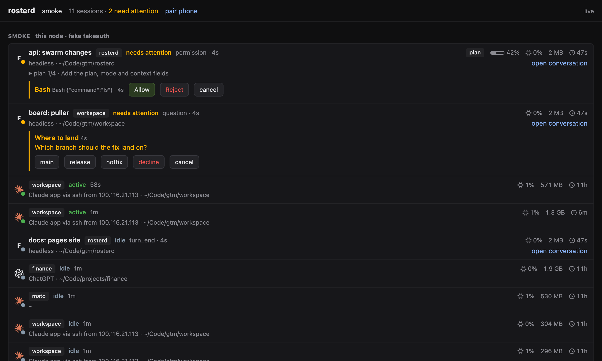
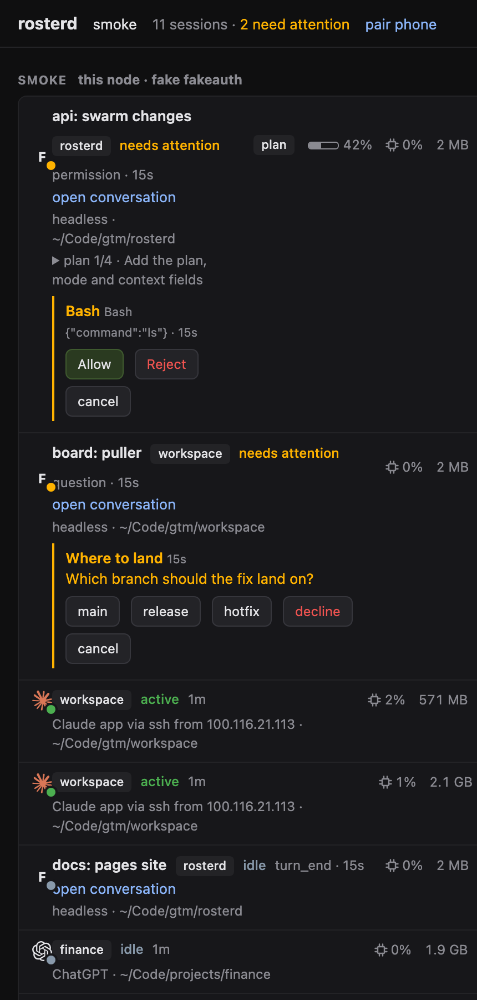

Every agent session, on every machine, one roster.
rosterd is one daemon per machine. It knows every coding agent session there, whoever started it, drives headless ones over ACP, and joins a swarm over Tailscale so any node, or the phone in your pocket, answers for all of them.
git push origin main Allow Allow always DenyWhat it is
A roster, not a scheduler
rosterd keeps one table per machine: every harness process (Claude Code, Codex, pi), what it is doing right now, and where a human can reach it. Activity comes from what the harness says through hooks or ACP. rosterd never guesses from time, CPU or output.
A runner for headless work
Start a session over the API and rosterd owns it through a holder: prompt it, watch its plan and context fill, answer its permissions and questions from any surface, suspend it when idle and resume it with the same harness session on the next prompt.
A swarm, not a server
Nodes find each other on the tailnet and exchange full snapshots. No leader, no database. Ask any node and you get every machine; act on a session and the request is proxied to its owner. A peer that drops keeps its last snapshot, dimmed, with its age.
Three surfaces, one truth

/ui. Same rows on the tray and the phone: name, harness, state and its age, the folder, the load of the process tree, and the pending permission or question with its buttons.
Menu bar
rosterd-tray on macOS and Linux. Sessions grouped by state, the attention count beside the icon, Allow, Allow always and Deny on the row, a click jumps to the tmux pane, the herdr pane or the conversation view.
Page and phone
A single HTML page served by every node, over loopback or the Tailscale IP. The SwiftUI app is the same page with a scanner for the pairing QR. Buttons only: no prompt box, no free text.
Shell and agents
One binary. rosterd list --swarm, watch, changes, allow, prompt, every command with --json. Agents get the same over an MCP server: list, spawn, prompt, read a recap.
What it refuses to do
The boundaries are the product. rosterd never:
- reads prompts, transcripts or terminal screens;
- infers activity from time, CPU or output;
- schedules or wakes an agent on its own, there is no timer;
- stores task or decision history;
- dials a client, holds a client's URL, token or ids;
- binds to anything but loopback and the Tailscale interface.
Anything that keeps a record over sessions, a project board, a task runner, a workspace, is a client of the API and only a client. It pulls the roster, subscribes to changes, answers through the action endpoints, and maps sessions to its own ids on its side.
Install
# macOS: the release bottle, a LaunchAgent and the tray
brew tap sbusso/rosterd https://github.com/sbusso/rosterd && brew trust sbusso/rosterd
brew install rosterd && brew services start rosterd
# Linux: the release tarball, a systemd user unit
tar xzf rosterd-<ver>-x86_64-unknown-linux-gnu.tar.gz
rosterd-<ver>/packaging/install.sh --from rosterd-<ver>/dist/x86_64-unknown-linux-gnu
# Arch, from source
makepkg -si -p packaging/arch/PKGBUILD
# then, on every machine: hooks, ACP adapters, the tray at login, a swarm to join
rosterd setuprosterd setup is one row per thing the machine needs: binaries on PATH, config, the service, per harness its binary, adapter and hooks, the tray, and optionally a swarm. Space picks, enter runs, --yes runs it headless. It is the only step that edits ~/.claude and ~/.codex.
Architecture
One binary, six modules, and a small holder process per headless session. Everything a node knows is in memory and rebuilt in under a second from holders, hook claims and a process scan.
Inside a node
The roster answers even when the runner is wedged: rosterd list and watch read the roster module only. The mesh reads the roster to serve peers and writes peer snapshots beside it, never into it. Every node is the only writer of its own roster, which is why the swarm needs no merge.
Process model
rosterd owns no harness process directly. A headless session is holder → ACP adapter → harness. The holder is a separate small binary shipped with rosterd; it starts the adapter with stdio pipes, listens on a per-session socket under the runtime directory, relays JSON-RPC both ways unchanged, keeps a replay buffer of the last 256 notifications, and writes a state file with the session id, harness, cwd, adapter PID and start time. On start rosterd lists the holder directory, reconnects to every live holder, replays the buffer and rebuilds those sessions.
This is what makes the daemon disposable. Kill it during a turn, restart it: the session is still live, the turn completes, no claim is lost.
The swarm
Identity
An Ed25519 keypair per node, generated at first start; node_id is the public key fingerprint. The name is pinned in config. A renamed machine is a new name, the id stays.
Discovery and membership
tailscale status lists the online peers; each is probed at /node/hello, a signed answer with capabilities. The first rosterd invite creates the swarm: a single-use, one-hour token. join presents it; membership gossips from there, newest signed record per node wins. revoke is signed and gossiped too.
Snapshot exchange
Each node keeps one SSE connection to every peer's /events and stores the latest full snapshot with the time it arrived. No diff format, no vector clock, no merge: every node is the only writer of its own roster. A lost peer is served with a growing peer_age_ms and peer_state: unreachable, dropped after 24 hours.
Trust
Node to node is HTTPS on the Tailscale interface, a self-signed certificate pinned to the node key, requests signed by the sender, the swarm key in a header. Loopback uses a bearer token. A node refuses to start with a listener anywhere else.
The record
One record per session, schema rosterd.snapshot.v1. Consumers ignore unknown fields. Nested processes of one session collapse into the root; a harness whose parent is a different session is its own record with parent_session_key.
| field | what it is |
|---|---|
node, node_id | the owning machine, name and key fingerprint |
session_key | node_id:pid:start_ticks, stable for the life of the process |
harness, session_id | claude, codex, pi or free text; the harness's own session id when known |
lane | headless (rosterd started it over ACP) or interactive (a human or a terminal manager owns it) |
sources | subset of launcher, acp, hook, files, scan |
activity, activity_event, activity_at, activity_seq | one of active, idle, needs_attention, unknown; the event that set it, when, and a sequence clients dedupe on |
name, cwd, parent_session_key | display name from launcher, hook or the agent itself; the folder; the spawning session |
tmux, herdr, holder, tty | runtime handles: where a human can reach the session |
liveness, ended_at, ended_reason | live, suspended, ended; exit, crash, reboot, killed, expired |
usage | tokens, cost, context fill as the harness reported them over ACP. Never estimated. |
mode, plan, load | the harness mode (plan, code…), its plan for the turn, and the CPU share and RSS of the process tree from the last scan |
Cross platform
Linux reads /proc and runs as a systemd user unit; macOS reads libproc and runs as a LaunchAgent in the GUI session so open reaches the display, the tmux server and the herdr socket; Windows uses toolhelp, named pipes and a service, with an interactive lane of hooks only. The holder, the hook script and the opener are the only platform-conditional code.
Data and event flows
A session's state is a series of claims. Each claim names a source, an activity word, an event and a sequence; the roster accepts or rejects it by precedence and publishes the whole table. Everything downstream is derived from that.
Sources and precedence
A lower source never overwrites a value a higher one set, but every source can fill a null. A headless session has both acp and hook; when they disagree, ACP wins. rosterd explain KEY shows which source set each field and which claims were rejected and why: the truthfulness view.
ACP traffic to activity
| ACP | activity | event |
|---|---|---|
| session/prompt sent by the runner | active | prompt |
| agent message chunk, tool call, tool call in progress | active | message, tool_call |
| session/request_permission | needs_attention | permission |
| elicitation/create (a form question) | needs_attention | question |
| authentication required on session/new | needs_attention | login |
| permission or question answered | active | permission_answered |
| prompt response returned | idle | turn_end |
| session/cancel sent | idle | cancelled |
| adapter exit | ended | exit or crash |
Plan, mode and context fill ride along: plan replaces the whole list on every notification, current_mode_update sets mode, usage_update fills usage. The final assistant message of a turn is kept as the recap when the session was started with recap: true; nothing else of the transcript is stored.
A permission, answered from the phone
Every client sees the same thing because every client reads the same record. A board that keeps its own decision log reads the pending request from GET /sessions/{key} and answers it the same way; the tray answers it with a click; the CLI with rosterd allow KEY. Sound, badges and urgency stay the client's job.
The change stream
GET /swarm/events is one full swarm snapshot per change anywhere: simplest to consume, heavy to notify on. GET /swarm/changes is the diff, computed by the node between consecutive frames, so a client learns what happened instead of re-reading the roster:
| event | when |
|---|---|
snapshot | first, and the resync point for a client that missed events |
session_started, session_ended, session_suspended | a key seen for the first time; liveness became ended, ended_reason says why; a holder stopped on purpose |
attention | an accepted claim left the session needing a human; sent again for every new claim while it waits; record.activity_event is permission, question or login |
attention_cleared | the session no longer needs a human and has not ended |
activity, renamed | any other accepted claim; a name change |
node, node_left | a node appeared, went unreachable or came back; a node was revoked or left |
Pure function of two frames, derived and never stored. rosterd changes prints it one line per change; attention is the one to notify on.
Session lifecycle
The runner never resumes on a timer. There is no wake-up schedule; a suspended session comes back only when something addresses it: a prompt from the CLI, the MCP tool or a client, or rosterd resume. On reboot every headless session is restored as suspended, none is resumed until addressed. Resumes are counted per hour; past max_resumes_per_hour a session stays suspended with a warning.
Restart, crash, reboot
- rosterd restart. Holders keep running. The roster rebuilds in under a second from holder state, replayed notifications, hook claims and a scan. Nothing is lost.
- Holder or harness crash. The scanner notices the PID is gone; the session ends with reason
crash. With a stored session id the runner resumes it once throughsession/loadin a new holder, as a new key with the same session id. A second crash within five minutes is not resumed. - Machine reboot. Holders are gone. The state files left behind restore each session as suspended.
Use cases
What people actually do with it, and the parts of rosterd each one leans on.
Approve from anywhere
A developer with agents on a desktop, a laptop and a server, and a phone.
Agents run under policy attention. When one wants to push, delete or spend, the request lands on the roster, the tray badge counts it, the phone shows the tool and its argument summary with Allow, Allow always and Deny. The answer goes to whichever node the phone is paired with and is proxied to the owner. Questions from the agent (a form with choices) and a harness that needs a login show up the same way.
Leans on: attention policy, /swarm/changes attention events, the proxied permission and answer endpoints, the QR pairing over Tailscale.
One board for every machine
A project board or task runner that tracks tasks and attempts.
The board is a client. It subscribes to /swarm/changes on any node, maps session keys to its own attempt ids, dedupes on activity_seq, and shows who is working on what across the fleet. When an attempt needs a human it reads the pending request from GET /sessions/{key} and answers it. rosterd carries none of the board's ids and never dials it.
Leans on: the client contract, /swarm/snapshot, /swarm/changes, the session action endpoints.
Headless workers on the big machine
A runner that starts agents on a server and reads results.
POST /sessions with a harness, a cwd, a name and a policy starts a session under a holder; prompt with wait_until: idle returns with the recap. Idle sessions are suspended after the timeout and resume on the next prompt with the harness's own session id, so a worker keeps its context across days without holding a process.
Leans on: the runner, holders, suspend and resume, the recap.
A coordinator that delegates
An agent that breaks work into parts for other agents.
Every session started by rosterd or the launcher has the rosterd MCP server in its config. The coordinator calls session.spawn to create children under itself, session.prompt to hand them work, session.read_state for activity and the last recap, and session.send to address a named session anywhere in the swarm. No transcript ever crosses; a recap and a state word do.
Leans on: the MCP server, parent_session_key, cross-node prompts.
Take a session with you
Started on the laptop, finished on the desktop.
A headless session is its harness session id plus a cwd. rosterd handoff KEY --to gibson suspends it here and resumes it there, same session id, new key, on a repo that exists on both sides. The record moves in the swarm roster; clients see session_suspended on one node and session_started on the other.
Leans on: suspend and resume, holder state, the mesh.
Know what the fleet burns
Anyone paying for several harnesses across several machines.
Every ACP usage_update lands on the record: tokens, cost, context fill. Rolled up per node, harness and day it answers where the spend goes and which subscription window is near its limit, in the spirit of OpenUsage but for what actually ran, never estimated.
Leans on: usage on the record, the roll-up endpoint and the journal.
Everything still in tmux
A developer who runs agents by hand.
Nothing changes in the terminal. The hook posts claims, the scanner fills the tmux or herdr handle, the roster shows the pane; a click on the tray, the page or the phone jumps to it. Sessions nobody registered still appear as unknown with their folder and load.
Leans on: hooks, the scanner, the opener.
What it can do, how, and what comes next
One page, top to bottom: the capabilities of a node, the way each one is built, and the directions the swarm opens. Sections marked new are landing now.
See
Every session, whoever started it
Interactive sessions in a terminal, tmux or herdr; headless ones under a holder; strays nobody registered. The scanner walks the process table every two seconds, confirms liveness of every known pid and adds new harness processes as unknown.
Four words, never a guess
active, idle, needs_attention, unknown, from the last accepted claim. The age shown is the age of that claim, never "time spent working". A session only the scanner knows is unknown until a hook or ACP speaks.
Where to reach it
The tmux pane, the herdr pane or the conversation view at /ui/sessions/{key}. Load from the process tree, the harness mode, the plan for the turn, the context fill, the pending request.
$ rosterd list --swarm
gibson 3 active 1 idle 1 needs attention reachable
mbp 1 active 1 suspended reachable
arch 2 idle stale 41s
api: swarm changes claude needs_attention 4s headless gibson 84560
board: puller claude active 58s interactive gibson 71022
[finance] codex idle 4m interactive gibson 61840
docs: pages site claude active 1s headless mbp 3341
migrate: holders claude suspended 2h headless mbp -Act
Answer
A permission gets Allow, Allow always (when the harness offers it) and Deny. A form question gets its choices. A harness that needs a login gets the login. From the tray, the page, the phone, the CLI or a client's own UI, proxied to the owner.
Drive
prompt sends a turn, optionally waiting for idle, attention or end. cancel stops the turn and keeps the session; stop ends the holder. name labels it; agents label their own session through MCP.
Open
open resolves the runtime handle: the opener script for tmux and herdr, the conversation view for headless. The page renders the ACP stream live with the last recap; it stores none of it.
Run
POST /sessions(orrosterd start) with harness, cwd, name, model, effort, policy and env. The runner starts a holder, the holder starts the adapter, ACPinitializeandsession/newrun, the session id is stored, the record registers with sourcesacpandlauncher.- The launch environment carries
ROSTERD_SOCKET, so hooks inside the harness post claims too; ACP wins when they disagree. The rosterd MCP server is in the harness's config under the namerosterd. - Turns flow: prompt, message chunks, tool calls, permission requests, plan and mode updates, usage, turn end. Each becomes a claim with a sequence.
- Idle past
idle_timeout_s: the holder is stopped, the record stayssuspendedwith its session id. A pending permission keeps the session live because it cannot survive the harness. - The next prompt starts a new holder,
session/loadwith the stored id, waits for it to settle, delivers the prompt. The caller sees one call that takes a little longer.
Policy auto approves every permission and stays active; attention leaves it pending. A child spawned through session.spawn inherits the parent's policy unless the call overrides it. Codex and pi join through their own adapters; pi's extension supplies the claims and the gate the adapter lacks.
Federate
A swarm is nodes that answer for each other. Join with an invite, then rosterd list --swarm on any machine is the union roster and any action on a session owned elsewhere is proxied to its owner with the sender's signature. Membership and revocations gossip in every hello. A peer off the tailnet is served from its last snapshot, dimmed, with its age; back on, the stale snapshot is replaced. Nothing else changes when a peer is unreachable, and nothing waits on one.
Learn new
Node-level events
/swarm/changes turns the snapshot stream into named events: sessions starting, ending, suspending; attention raised and cleared; nodes joining, dropping, coming back. attention is the one every client notifies on, and it carries the record with the pending request so the notification can act. A missed stretch resyncs from the next snapshot.
Attention as the first-class thing
Every surface leads with what needs a human: the tray badge, the page's first section, the phone's first card, rosterd changes. A permission, a question and a login are the three shapes; each names the tool, the question or the harness, and offers only the buttons the harness offered. No free text anywhere, so nothing a client shows can be turned into a prompt.
Model and credential health
Per node, per harness: logged in or not, rate limited until when, last successful session/new. It rides in the hello capabilities so rosterd nodes shows it and a client can pick a node whose harness can actually start. A harness that refuses a session for want of a login raises attention with activity_event: login.
Usage across the fleet
The usage a harness reports over ACP (input and output tokens, cost, context fill) is rolled up by node, harness, session and day: rosterd usage --swarm --since 7d, and the same frame over the API. What OpenUsage does for a subscription on one Mac, this does for what actually ran on every node, from the harness's own numbers. Never estimated; a harness that reports nothing shows nothing.
Journal
An append-only, per-node log of the change events: one line per start, end, suspension, attention raised and answered, node change. It is agent logging at the level a human reads, without a transcript. rosterd journal --since replays it, and a client that was down catches up from it instead of re-deriving from snapshots. Rotated by size; never a decision record.
Hand off new
A headless session is portable: its harness session id, cwd, name and policy. rosterd handoff KEY --to NODE suspends it on the owner, ships the holder state to the target over the mesh, and resumes it there under a new key with the same session id. The repo has to exist on both sides; that is the caller's business, rosterd checks the cwd and refuses otherwise. Laptop to desktop before a long run, desktop to server before closing the lid.
Agents talking to agents new
The MCP server already lets a session spawn children and prompt them. session.send completes the loop: address any session in the swarm by name, wait until it is idle, read its recap. Two agents on two machines can hand each other work with the roster as the address book, and rosterd still schedules nothing: every prompt is sent by someone, a human or an agent, never by a timer.
# from inside a session, through the rosterd MCP server
session.spawn { harness: "claude", cwd: "~/Code/rosterd", name: "tests: holder" }
session.send { name: "tests: holder", prompt: "run the relay tests", wait_until: "idle" }
session.read_state { name: "tests: holder" } → { activity: "idle", recap: "3 passed…" }Opportunities
A control plane for agents, the way Kubernetes is for containers
Today a node is a machine and a client picks it. The same primitives, capabilities in the hello, load on the record, handoff between nodes, are what placement needs: POST /swarm/sessions that picks the node with the harness, the repo and the headroom. Not built, deliberately; the roster has to be trustworthy first.
A third operating system
Windows is specified: toolhelp, named pipes, a service, hooks only in the interactive lane. A swarm that spans all three is where the mesh stops being a convenience.
Clients that are not ours
The client contract is small: two SSE streams, one GET, a handful of POSTs. An Omarchy bar module, a Raycast extension, a Slack bot answering permissions, a CI job that waits on attention. Each is an afternoon.
More harnesses
Anything with an ACP adapter is a headless lane; anything with hooks or an extension point is an interactive lane. pi showed the pattern: an adapter for the runner, an extension for claims and the gate.
Usage that drives choices
Once spend and window limits are on every node, a client can prefer the harness with headroom, or warn before a long run starts on a nearly spent subscription. The data is there; the policy stays in the client.
What stays out
Terminal rendering, decision history, rules over agent behaviour, credential management, cross-swarm federation, relays for machines that cannot reach each other, multi-user nodes. Saying no is what keeps a node small enough to trust.
API, MCP, CLI
All JSON, all on the local socket and the loopback listener with a bearer token; the swarm paths also on the Tailscale listener. Every CLI command with --json prints the API frame for its resource byte for byte.
Endpoints
| path | what |
|---|---|
GET /snapshot | the complete node roster |
GET /events | SSE, the complete node roster on every change |
GET /status | node, listeners, swarm, counts, sources |
POST /register, /claim, /name | intake from launchers and hooks: a session identity, an activity claim, a display name |
POST /gate | the pi extension's gate: waits for allow or deny on a tool call |
POST /sessions | start a headless session: harness, cwd, name, model, effort, permission_policy, env, recap |
GET /sessions/{key} | one record in full: the pending permission, question or login, the last recap, the children |
PATCH, DELETE /sessions/{key} | change the policy or the name mid-life; stop the holder |
POST /sessions/{key}/prompt | { prompt, wait_until?: idle|needs_attention|ended, timeout_s? } |
POST /sessions/{key}/permission, /answer | answer the pending permission with an option id; answer the pending question with the form values |
POST /sessions/{key}/cancel, /suspend, /resume, /open, /name | the session actions |
POST /sessions/{key}/spawn | a child session under this one: harness, cwd, name, model, permission_policy; returns its key and record |
GET /sessions/{key}/stream | the raw ACP notification stream for a client that renders a conversation; not stored |
GET /sessions/{key}/explain | which source set each field and when, which claims were rejected and why |
GET /swarm/snapshot | the union roster, each node tagged with peer_age_ms and peer_state |
GET /swarm/events | SSE, the full swarm snapshot on any change anywhere |
GET /swarm/changes | SSE, snapshot once, then one event per change |
GET /swarm/nodes | membership with health and capabilities |
/swarm/{node_id}/sessions/… | any session path, proxied to that node |
GET /pair, GET /ui, /ui/sessions/{key} | the phone pairing payload; the page and the conversation view |
GET /node/hello, POST /node/join | node to node: the signed hello, the join with an invite |
The session paths are the same under the loopback listener and, prefixed with the owning node, over the swarm. Any node accepts an action for any session and proxies it; the response travels back.
MCP tools
Served on the same socket under the name rosterd, in the config of every harness started by the runner or the launcher. The caller is identified by its PID from the socket peer credentials.
| tool | what |
|---|---|
roster.list, roster.watch | the roster, node or swarm scope |
session.name | rename the caller's own session |
session.spawn | a child under the caller; returns its key and record |
session.prompt, session.send | a turn for a session by key, or by name anywhere in the swarm, with an optional wait |
session.read_state | activity and the last recap, never the transcript |
swarm.nodes | membership and health |
CLI
rosterd list|watch [--swarm|--node N] one row per session; watch reprints on every change
rosterd changes one line per change across the swarm
rosterd status | nodes this node; swarm membership and health
rosterd read KEY | explain KEY one session in full; which source set each field
rosterd start --harness H --cwd DIR [--name L] [--policy auto|attention] [--model M] [--effort E] [--env K=V]
rosterd prompt KEY TEXT [--wait idle|needs_attention|ended] [--timeout SECONDS]
rosterd cancel|stop|suspend|resume|open KEY
rosterd name KEY LABEL | name KEY --clear
rosterd allow KEY [--always] | deny KEY [--reason TEXT]
rosterd spawn KEY --harness H --cwd DIR [--name L]
rosterd handoff KEY --to NODE
rosterd usage [--swarm] [--since 7d] | journal [--since T]
rosterd invite [--ttl MINUTES] | join ADDRESS --token T | revoke NODE_ID | leave
rosterd integrate install|uninstall claude|codex|pi | integrate status
rosterd ui | daemon [--config PATH] | setup [--yes] | doctor | versionKEY is an exact session key, a PID on this node, or a unique display name; an ambiguous name lists the candidates and never guesses. Exit codes: 0 ok, 1 user error, 2 daemon unreachable, 3 a peer was needed and is unreachable. The agent-facing summary is skill/SKILL.md; its one rule: never parse the human tables.
Config
# ~/.config/rosterd/rosterd.toml on Linux, ~/Library/Application Support/rosterd/ on macOS
[node]
name = "gibson" # pinned; a renamed machine is a new name, the id stays
port = 8791 # the swarm listener, on the Tailscale interface
listen = "tailscale"
loopback_port = 8790 # the page and local tools, bearer in loopback.token
[swarm]
static_peers = ["100.64.0.12:8791"] # the fallback without Tailscale
[runner]
default_permission_policy = "attention"
idle_timeout_s = 1800
suspend_on_needs_attention = false
resume_on_crash = true
max_resumes_per_hour = 6
recap = true
[sources]
files = false
scan_interval_ms = 2000
[harness.claude]
adapter = "claude-agent-acp"
[harness.codex]
adapter = "codex-acp"
[harness.pi]
adapter = "pi-acp"
extension = true
gate_timeout_s = 3600Keys and tokens live next to it with mode 0600: node.key, loopback.token, swarm.json. Adapters are pinned by version, pi's by commit, in a lock file the node writes on first install.
Hooks
rosterd setup or rosterd integrate install claude writes these; only marked entries are ours, everything else in the file is kept. The hook reads session_id, hook_event_name, cwd and notification_type, nothing else, posts the claim to the socket, fails open in 800 ms and always exits 0.
{ "hooks": {
"SessionStart": [{ "hooks": [{ "type": "command", "command": "rosterd-hook" }] }],
"UserPromptSubmit": [{ "hooks": [{ "type": "command", "command": "rosterd-hook" }] }],
"PreToolUse": [{ "matcher": "", "hooks": [{ "type": "command", "command": "rosterd-hook" }] }],
"PermissionRequest": [{ "hooks": [{ "type": "command", "command": "rosterd-hook" }] }],
"Notification": [{ "hooks": [{ "type": "command", "command": "rosterd-hook" }] }],
"Stop": [{ "hooks": [{ "type": "command", "command": "rosterd-hook" }] }]
} }Environment
| variable | read by | meaning |
|---|---|---|
ROSTERD_SOCKET | daemon, CLI, hook, launcher | the daemon socket; $XDG_RUNTIME_DIR/rosterd.sock on Linux, $TMPDIR/rosterd.sock on macOS |
ROSTERD_HARNESS | hook | the harness name when the process tree does not say |
ROSTERD_CONFIG_DIR, ROSTERD_STATE_DIR, ROSTERD_CONFIG | daemon, CLI, scripts | override the directories and the config file |
ROSTERD_GATE | pi extension | attention pauses before each tool call until allowed or denied |
ROSTERD_MACHINE, ROSTERD_TERMINAL_CMD, ROSTERD_HERDR_LINK | opener | this machine's name, how to open a terminal, whether a herdr:// handler exists |
RUST_LOG | daemon | log filter, info by default |